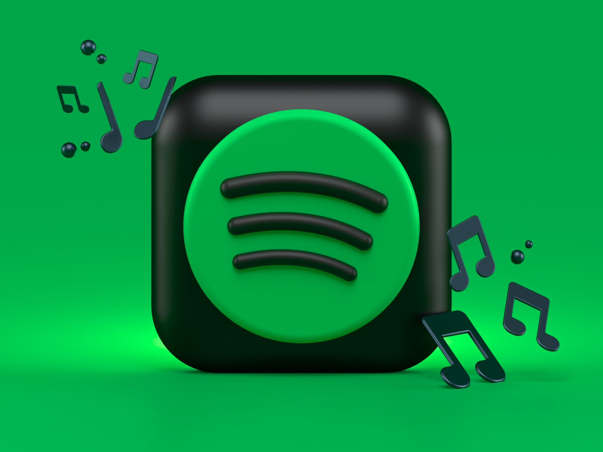
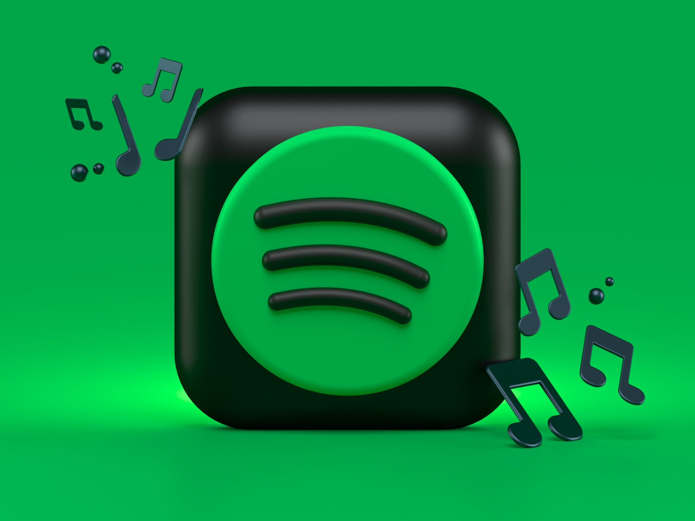

Musiikki
Tykkään kuunnella melkein kaikenlaista musiikkia. Musiikkia tulee kuunneltua matkustaessa, treenatessa ja pelatessa. Kuuntelen musiikkia yleensä spotifystä ja välillä youtubesta.
Tykkään kuunnella melkein kaikenlaista musiikkia. Musiikkia tulee kuunneltua matkustaessa, treenatessa ja pelatessa. Kuuntelen musiikkia yleensä spotifystä ja välillä youtubesta.
